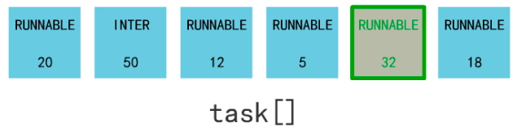
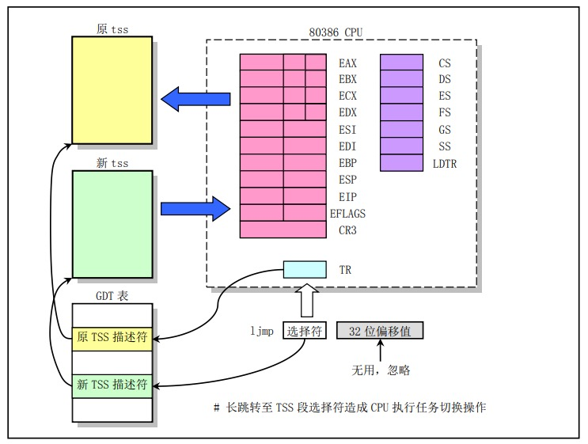
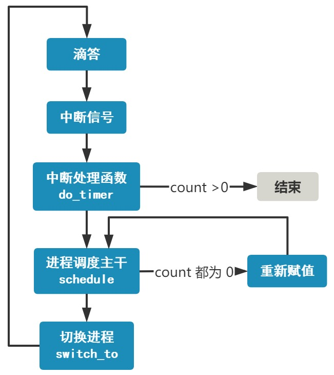
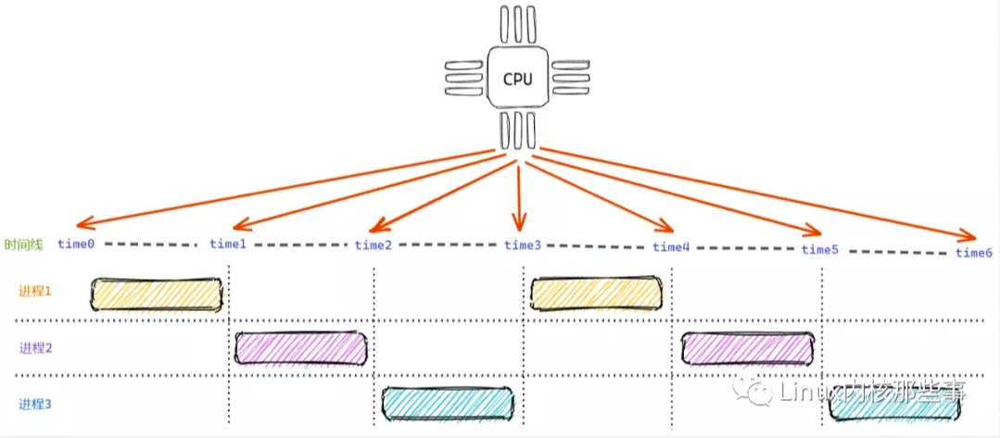

概述
- 本篇讲述Linux进程调度器
一 进程调度的原理
计算机中有一个设备，叫定时器，准确说叫可编程定时/计数器。 这个定时器每隔一段时间就会向 CPU 发起一个中断信号。

在 linux-0.11 中，这个间隔时间被设置为 10 ms，也就是 100 Hz。
shedule.c
#define HZ 100
发起的中断叫时钟中断，其中断向量号被设置为了 0x20。
时钟中断
一切的源头，就源于这个每 10ms 产生的一次时钟中断。 当然如果没有操作系统的存在，这个 10ms 一次的时钟中断，就打了水漂，CPU 会收到这个时钟中断信号，但不会做出任何反应。 但很不幸，linux 提前设置好了中断向量表。
schedule.c
set_intr_gate(0x20, &timer_interrupt);
这样，当时钟中断，也就是 0x20 号中断来临时，CPU 会查找中断向量表中 0x20 处的函数地址，这个函数地址即中断处理函数，并跳转过去执行。 这个中断处理函数就是 timer_interrupt，是用汇编语言写的。 system_call.s
_timer_interrupt:
...
// 增加系统滴答数
incl _jiffies
...
// 调用函数 do_timer
call _do_timer
...
这个函数做了两件事，一个是将系统滴答数这个变量 jiffies 加一，一个是调用了另一个函数 do_timer。
sched.c
void do_timer(long cpl) {
...
// 当前线程还有剩余时间片，直接返回
if ((--current->counter)>0) return;
// 若没有剩余时间片，调度
schedule();
}
do_timer 最重要的部分就是上面这段代码，非常简单。 首先将当前进程的时间片 -1，然后判断：
- 如果时间片仍然大于零，则什么都不做直接返回。 后续继续从内核空间返回用户空间、运行当前的进程.
- 如果时间片已经为零，则调用
schedule()，用脚去想也知道，这就是进行进程调度的主干。
进程的调度
void schedule(void) {
int i, next, c;
struct task_struct ** p;
...
while (1) {
c = -1;
next = 0;
i = NR_TASKS;
p = &task[NR_TASKS];
while (--i) {
if (!*--p)
continue;
if ((*p)->state == TASK_RUNNING && (*p)->counter > c)
c = (*p)->counter, next = i;
}
if (c) break;
for(p = &LAST_TASK ; p > &FIRST_TASK ; --p)
if (*p)
(*p)->counter = ((*p)->counter >> 1) +
(*p)->priority;
}
switch_to(next);
}
别看一大坨，我做个不严谨的简化，你就懂了。
void schedule(void) {
int next = get_max_counter_from_runnable();
refresh_all_thread_counter();
switch_to(next);
}
很简答，这个函数就做了三件事：
- 1 拿到剩余时间片（counter的值）最大且在 runnable 状态（state = 0）的进程号 next。

-
2 如果所有 runnable 进程时间片都为 0，则将所有进程（注意不仅仅是 runnable 的进程）的 counter 重新赋值（counter = counter/2 + priority），然后再次执行步骤 1。
-
3 最后拿到了一个进程号 next，调用了
switch_to(next)这个方法，就切换到了这个进程去执行了。
切换进程
看 switch_to 方法，是用内联汇编语句写的。
其实主要就干了两件事。
-
通过 ljmp 跳转指令跳转到新进程的偏移地址处。
-
将当前各个寄存器的值保存在当前进程的 TSS 中，并将新进程的 TSS 信息加载到各个寄存器。（这部分是执行 ljmp 指令的副作用，并且是由硬件实现的）
简单说，保存当前进程上下文，恢复下一个进程的上下文，跳过去！啥是上下文，就是他喵的一堆寄存器的值而已。

至此，我们梳理完了一个进程切换的整条链路，先来回顾一下。
- 罪魁祸首的，就是那个每 10ms 触发一次的定时器滴答。
- 而这个滴答将会给 CPU 产生一个时钟中断信号。
- 而这个中断信号会使 CPU 查找中断向量表，找到操作系统写好的一个时钟中断处理函数 do_timer。
- do_timer 会首先将当前进程的 counter 变量 -1，如果 counter 此时仍然大于 0，则就此结束。
- 但如果 counter = 0 了，就开始进行进程的调度。
- 进程调度就是找到所有处于 RUNNABLE 状态的进程，并找到一个 counter 值最大的进程，把它丢进 switch_to 函数的入参里。
- switch_to 这个终极函数，会保存当前进程上下文，恢复要跳转到的这个进程的上下文，同时使得 CPU 跳转到这个进程的偏移地址处。
- 接着，这个进程就舒舒服服地运行了起来，等待着下一次滴答的来临。

二 调度器的进化历史:
-
通过上文我们知道了内核代码里的
schedule()函数, 其实就是调度器. 这里说明下调度器的进化历史 -
2.4 版本 O(n)调度器
- 2.6 O(1)调度器
- 2.6 CFS调度器
三 CFS和基于时间片调度的O(1)算法的本质区别（本质区别是啥）？
O(1) 调度器还是基于时间片的。
有一个比较简单的方法就是：让每个进程都运行一段相同的时间片，这就是 基于时间片轮询调度算法。如下图所示：

如上图所示，开始时进程1获得 time0 ~ time1 的CPU运行时间。当进程1的时间片使用完后，进程2获得 time1 ~ time2 的CPU运行时间。而当进程2的时间片使用完后，进程3获得 time2 ~ time3 的CPU运行时间。 如此类推，由于每个时间片都是相等的，所以理论上每个进程都能获得相同的CPU运行时间。这个算法看起来很不错，但存在两个问题： * 不能按权重分配不同的运行时间，例如有些进程权重大的应该获得更多的运行时间。 * 每次调度时都需要遍历运行队列中的所有进程，找到优先级最大的进程运行，时间复杂度为 O(n)。对于一个高性能的操作系统来说，这是不能接受的。 为了解决上面两个问题，Linux内核的开发者创造了 完全公平调度算法。
- 1 进程权重的问题，应该O(n)和O(1)调度算法也可以解决.
- 2 随着进程数上升，找到优先级最大的那个进程放到CPU上去运行，最原始的做法是随着进程数增大而耗费的时间增大，这个O(n)调度算法的缺陷，到了O(1)调度算法已经得到了解决.
- 3 还有一个问题是： 一个新的调度周期开始的时候所有进程的剩余时间片都是满满的，这个时候找谁来运行呢？ 这个问题一直没有很好的得到解决.
四 CFS（完全公平调度器）简化版
- 看的是进程在run queue里等待的时间（虚拟时间），谁等待的越久，下一个就选择谁运行。
- 在同一个run queue里，同一个调度周期里，大家的虚拟时间都是相等的。比如 同一个调度周期里，进程一共有2个。 那么虚拟时间上，2个进程平分整个调度周期，各自运行一半时间。如果同一个调度周期里有3个可运行进程，那么每个进程拿到1/3的虚拟时间，放到CPU上去运行。
- 但是虚拟时间到真实时间的映射比例是不同的，是按照进程权重来的。
-
- 比如调度周期为30ms，2个进程，A权重为1，B权重为2，那么虚拟时间大家都是15ms 但是虚拟时间到真实时间的映射不相同， 真实的时间 A为10ms，B为20ms。 虚拟时间里，A每过1ms，真实时间上过去为0.66ms， B每过1ms，真实时间上过去1.33ms 而调度算法选择进程的时候，只看A和B在队列里等待的时间，而且是以虚拟时间为考量.
由此可知，虚拟时钟和真实时间的换算是根据进程的权重（也就是优先级）来的。